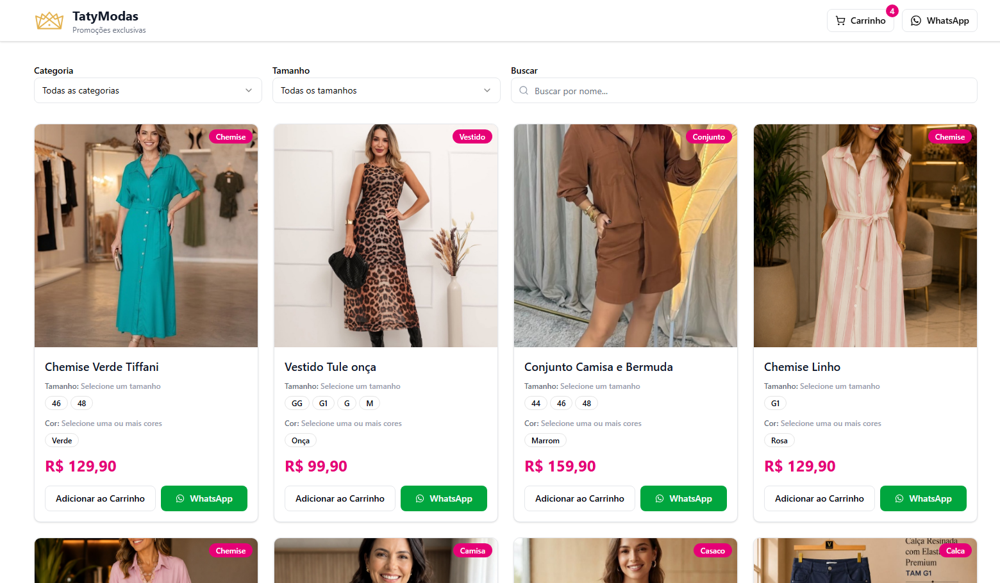
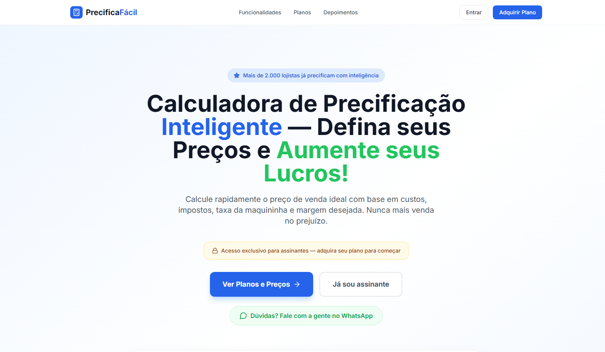
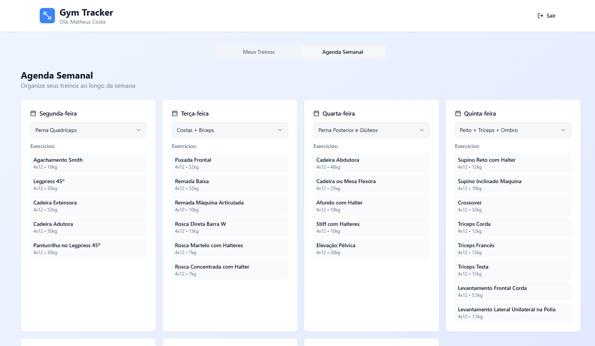
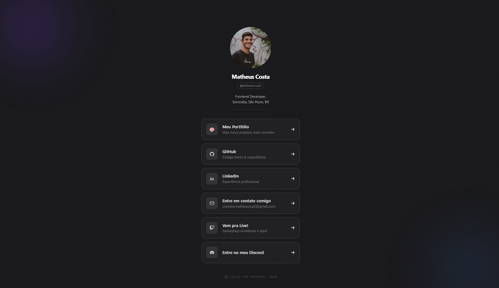

Olá, meu nome é Matheus Costa
Desenvolvedor de Software em constante aprendizado
Sobre Mim
Sou formado em Análise e Desenvolvimento de Sistemas. Atualmente cursando Desenvolvimento de Software Multiplataforma na FATEC Votorantim.
Tenho experiência em transformar ideias em aplicações reais, desde o Suporte Técnico até a Programação de soluções.
Atualmente foco meus estudos e projetos em tecnologias como: JavaScript, TypeScript com os Frameworks React.JS e Next.JS
Formação Academica
-
Graduação:
- Cursando Desenvolvimento de Software Multiplataforma - FATEC Votorantim
- Formado em Análise e Desenvolvimento de Sistemas - UNIP Sorocaba
-
Ensino Médio:
- Escola Estadual Wallace Cockraine Simonsen
Experiências
- Suporte Técnico N1 - Sorocaba Informática
- Suporte Técnico N1 - IT2B Tecnologia
- Suporte Técnico N1 - Escola Portal
- Estágiario de Desenvolvimento FullStack - Compass UOL
- Estagiário em Suporte Técnico - Prefeitura de Sorocaba
Projetos

Vitrine Loja TatyModas
Sistema completo de vitrine para loja de roupas femininas e integração com WhatsApp.
- React
- TypeScript
- Firebase
- Tailwind CSS

SAAS PrecificaFácil
O PrecificaFácil é uma plataforma SaaS (Software as a Service) desenvolvida para ajudar lojistas e empreendedores a calcularem o preço de venda ideal para seus produtos, garantindo uma margem de lucro saudável.
- Next.js
- TypeScript
- TailwindCSS
- Firebase

Gym Tracker
Um aplicativo web moderno para gerenciar seus treinos de academia, construído com React, TypeScript, TailwindCSS, ShadCN e Firebase.
- React
- TypeScript
- TailwindCSS
- Firebase

Links
Este projeto é uma página responsiva desenvolvida com React, TypeScript e Tailwind CSS, utilizando o design system do shadcn/ui, para reunir e compartilhar meus links pessoais e redes sociais em um só lugar.
- React
- TypeScript
- TailwindCSS